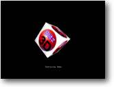

Texturing Aim: How to texture an object
|
 |
For our objects to look more realistic we really need to texture them, but what is texture mapping ?
Think if it as a way of adding extra details to an object. For example... You design an ordinary white cube, doesn't look much does it ?
But add a texturemap to it, and suddenly you have a BORG cube !.
Textures are bitmap pictures that have been designed with a paint program (that can save BMP format files.)
Another example... If you designed a basic model of a creature, using a texturemap you could add all the external features - such as clothes and facial expressions.
Although B3D has alot of commands to manage multiple textures and special effects, for now we shall just be using the very basic EntityTexture command.
Of course we could save ourselves alot of time by designing our objects and applying the textures to them directly from a 3d modelling program, but that would make this tutorial a waste of time !.
So why would we want to apply a texture in realtime ?, well for starters a new texture may be put onto the object at any time. Take a wall, shoot it ! - now for things to look realistic in our 3d world, we would like to have somekind of indication that it was shot. We could do this by loading a texture of a bullet hole directly onto the wall. Every 3d game currently on the market uses texture trickery in some form or another, as your experience grows - so will your imagination !. Why have a flat river, when you could use texturemaps to give the impression of ripples or waves.
B3D has so many lovely features for us to use including the new ANIMATED textures command, we will be using this later on !. (Quake I/II/III used this trick to give us the impression of moving water)
Let's look at this in practice:
| Graphics3D 800,600 SetBuffer BackBuffer() camera=CreateCamera() CameraViewport camera,0,0,800,600 light=CreateLight() cube=CreateCube() PositionEntity cube,0,0,5 texture=LoadTexture("blitztexture.bmp") EntityTexture cube,texture While Not KeyHit(1) TurnEntity cube,0.1,0.2,0.3 UpdateWorld RenderWorld Text 340,500,"Texturing Demo" Flip Wend End |
As you can see, a texture can make all the difference to a very basic object.
The only 2 lines of code we don't already know are:
|
texture=LoadTexture("blitztexture.bmp") EntityTexture cube,texture |
Two nice and friendly commands, the first loads a texturemap into memory - with the pointer variable 'texture' pointing to it.
Once we have successfully loaded the texture, we assign it to the object using the EntityTexture command. (here we are assigning the variable pointer TEXTURE to the cube we defined earlier)
You could if you wanted load the picture file BLITZTEXTURE.BMP into MS Paint and make some changes.. if you wanted to !
And that's all there is to it, but a quick word of advice: If your object isn't textured as it should, always check that the texturemaps are in the right directory. It's all to easy to spend half the day trying to work out a texturing problem, only to find that you moved the program to another directory without dragging the associated texture files with it.